책장 한켠 · DESIGN REVIEW
책장 한켠, 화면 비교.
시작 버튼을 ▶ 재생 아이콘으로 바꾸고 새 로딩 이미지를 적용했습니다. 책장은 시안과 같은 18권 예시로 비교합니다.
공유를 누르면, 바로 보낼 곳 선택
하단의 공유 버튼을 누르면 갈피 이미지를 만든 뒤 기본 공유창이 올라옵니다. 메모는 기본 제외하며, ‘더 보기 → 메모 포함해 공유’로 함께 보낼 수 있습니다. 표시되는 앱과 추천 상대는 휴대폰 환경에 따라 달라집니다.
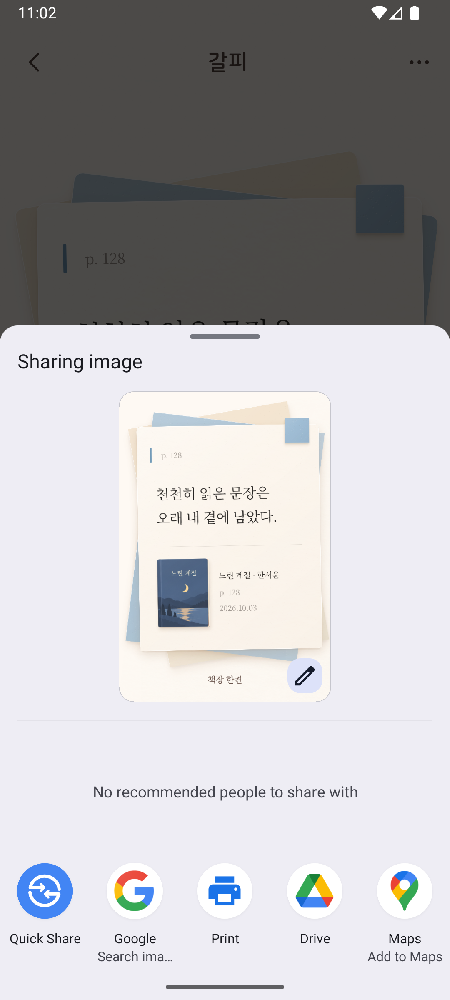
원본 크기로 열기 ↗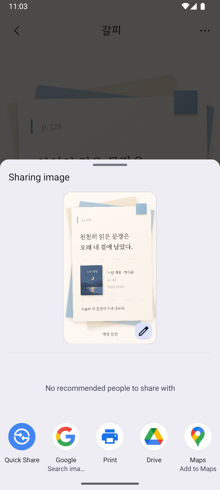
원본 크기로 열기 ↗책 상세
표지 크기와 위치, 제목·저자 사이 간격, 읽기 상태, 쪽수와 하단 버튼의 높이를 원본에 맞춰 보정했습니다.
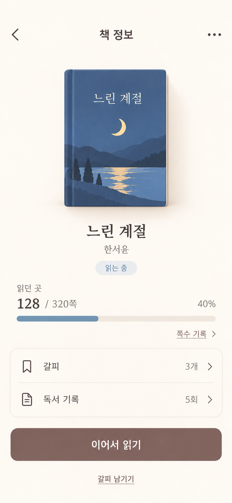
원본 크기로 열기 ↗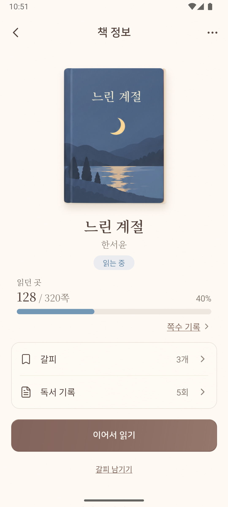
원본 크기로 열기 ↗갈피 목록
문장과 출처를 가까이 배치하고 종이 가장자리·그림자를 다듬었습니다. 아껴둔 갈피는 실제 저장·필터·해제와 연결됩니다.
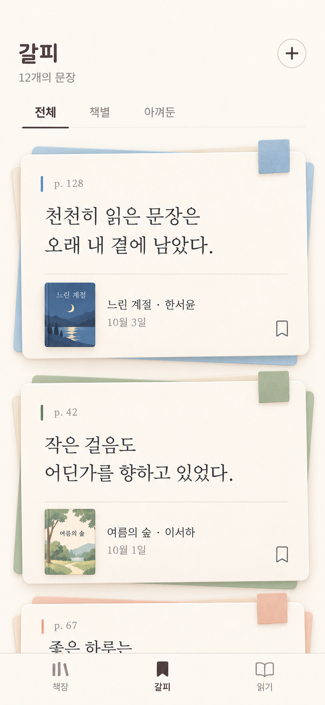
원본 크기로 열기 ↗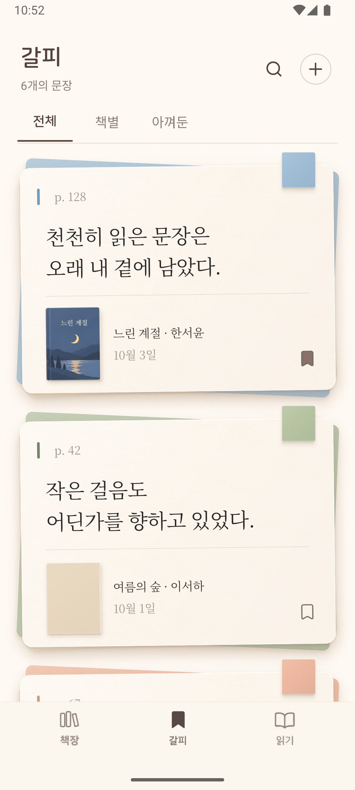
원본 크기로 열기 ↗갈피 상세
문장의 크기와 행간, 뒤 종이의 각도·크기, 책 정보와 메모의 간격을 조정했습니다. 모든 화면에서 같은 저장된 장정과 표지를 사용합니다.
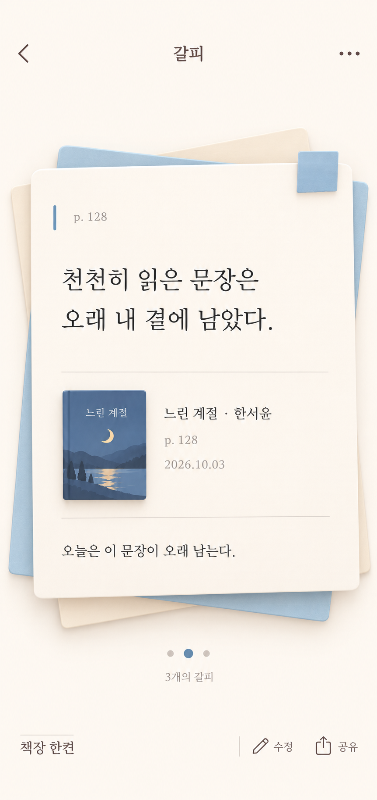
원본 크기로 열기 ↗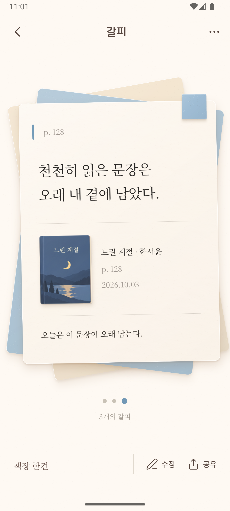
원본 크기로 열기 ↗책 추가
검색창과 헤더 위치를 조정했습니다. 실제 검색 결과를 보여주므로 시안과 책 내용은 다릅니다.
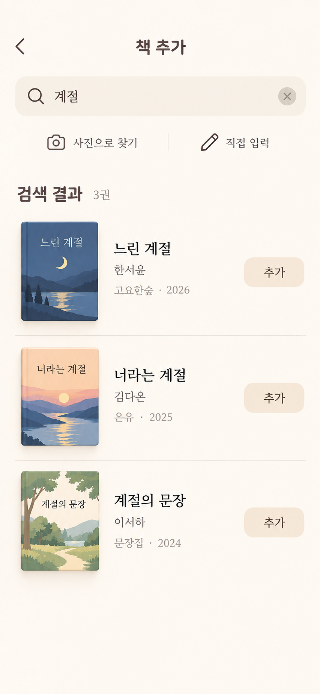
원본 크기로 열기 ↗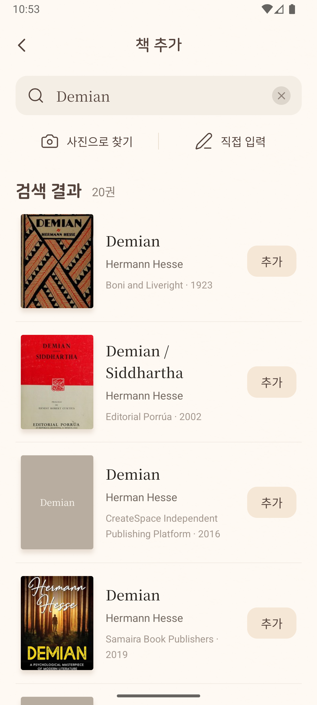
원본 크기로 열기 ↗읽기
읽기 탭은 자동 측정 없이 00:00과 ▶ 재생 버튼으로 열립니다. 읽는 동안에는 일시정지, 멈춘 뒤에는 다시 ▶를 표시합니다. 아래는 같은 재생 아이콘을 확인할 수 있는 기존 일시정지 캡처이며, 수정 후 시작 화면을 새로 촬영한 이미지는 아닙니다.
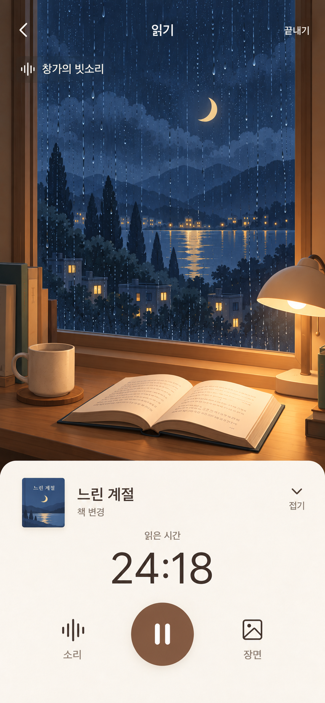
원본 크기로 열기 ↗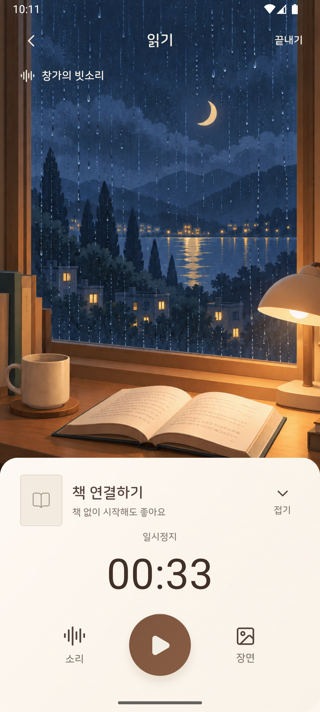
원본 크기로 열기 ↗책장
시안과 같은 제목·표지의 18권 예시를 사용한 기존 앱 캡처입니다. 앞서 표시되던 8권 사용자 책장은 비교 대상이 달랐습니다. 저장된 사용자 책장 보기. 실제 책과 배치 데이터는 그대로 유지합니다.
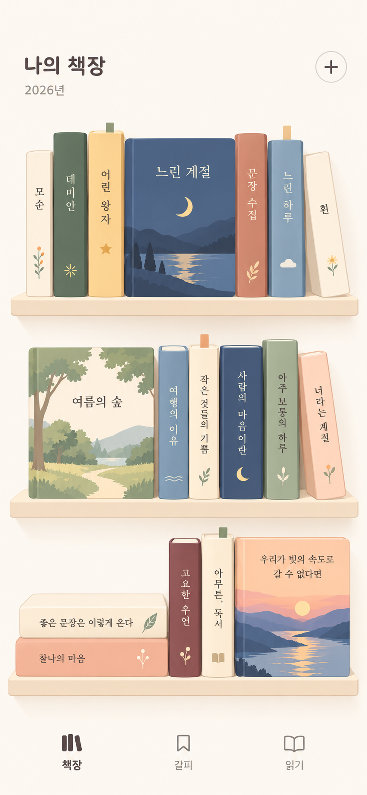
원본 크기로 열기 ↗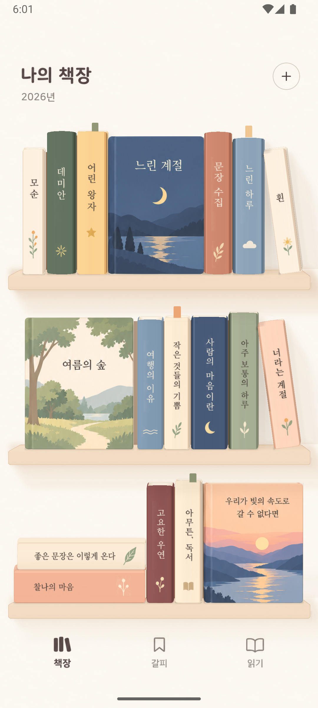
원본 크기로 열기 ↗책장 한켠의 고요한 시작
추가해 주신 이미지를 앱의 글꼴과 저장된 책장을 준비하는 동안 표시합니다. 이미지 전체가 보이도록 비율을 유지하며, 준비가 끝나면 홈 화면으로 이어집니다.
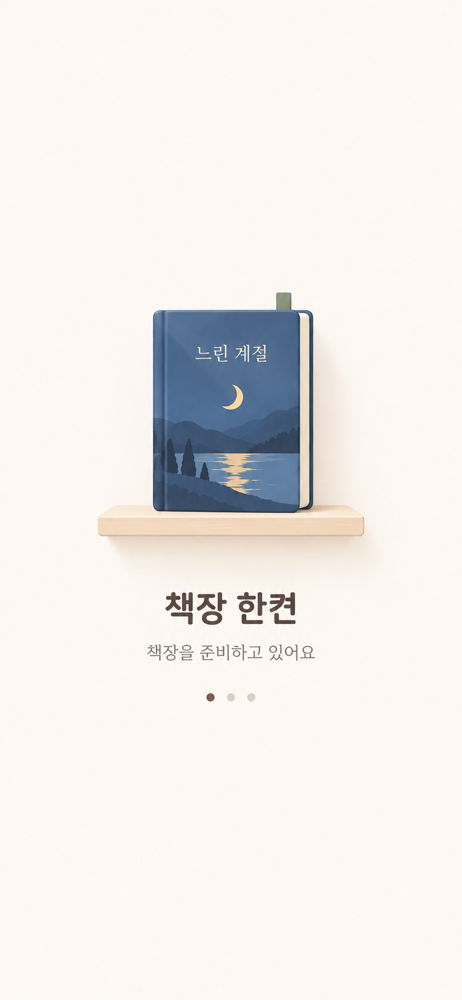
확인한 내용과 남은 차이
캡처는 실제 앱 경로에서 촬영했습니다. 비교용 데이터를 제거한 뒤 기존 책 8권·도서 데이터·배치·설정이 작업 전과 같은지 대조했습니다.
디자인에서 달라진 부분
- 화면 아래로 갈수록 누렇게 변하던 배경을 균일한 밝은 크림색으로 보정했습니다.
- 책 상세의 표지·제목·저자·읽던 쪽수·버튼 위치, 갈피의 문장 조판과 겹친 종이 표현을 다듬었습니다.
- 창가 그림은 원본 구도를 보존한 별도 자산으로 바꿨습니다. 글자·버튼·목록은 실제 UI입니다.
기능·데이터 보존과 검사 결과
- 아껴둔 갈피 저장·필터·해제·재실행 유지.
- 읽기 탭의 00:00 대기, 책 없이 시작, 접기·펼치기, 일시정지, 장면 변경 시 시간 유지, 종료할 때 책 연결과 기록 저장.
- 강제 종료 후 일시정지 시간 복구.
- 글자 크기 150%에서 긴 제목·저자 줄바꿈, 책 상세 버튼과 긴 갈피 스크롤.
- 기본 공유창 열기·취소 후 다시 열기, 메모 포함 이미지 생성. 외부로 실제 전송하지 않았습니다.
기존 작업을 포함한 앱에서 31개 테스트 모음·277개 테스트가 통과했습니다. 이후 배경과 공유 변경은 타입 검사와 실제 화면에서 확인했습니다. 작업 전 미커밋 파일 56개도 바이트 단위로 보존했습니다.
push할 커밋만 분리한 환경에서도 타입 검사와 30개 테스트 모음·263개 테스트가 통과했습니다. 캡처에는 기존 미커밋 3D 디자인 작업이 포함되어 있으며, 해당 작업은 이번 push에 포함하지 않았습니다.


측정한 성능 변화
| 접기·펼치기 4회 | 수정 전 | 수정 후 |
|---|---|---|
| 측정 프레임 | 15 | 11 |
| 프레임 시간 p50 | 20ms | 36ms |
| 프레임 시간 p95 | 150ms | 53ms |
p50은 늘고 p95는 줄었습니다. 에뮬레이터 개발 번들의 작은 표본이므로 전반적인 속도 향상으로 단정하지 않았습니다. 장면·종이 재질 변경을 측정했으며 후속 배경색·공유 흐름은 별도 성능 측정하지 않았습니다.
창가 그림의 RGB 평균 절대 오차는 32.085 → 5.318, 파일 크기는 약 25.3% 감소했습니다. 디코딩 메모리는 약 6.29MB로 거의 같습니다. 이는 전체 화면 일치율이 아닙니다.
초기 반복 측정은 자동 조작이 화면 밖으로 이탈하여 제외했습니다. GPU 4950ms 값은 정상적인 성능값으로 해석하지 않았습니다.
남은 차이·임시 자산·미확인 항목
표지의 질감·제목 인쇄·광택과 종이 그림자에는 차이가 남습니다. 상태 표시줄, 화면 비율, 실제 데이터와 읽기 상태도 시안과 다릅니다. 완전 동일하거나 99.9% 일치한다고 판정하지 않았습니다.
벽난로·조용한 방은 기존 임시 장면입니다. 실기기·iOS·더 작은 화면·실제 소리 품질·공유 최종 전송은 미확인입니다. 목표 시간은 이번 반복에서 다시 검사하지 않았습니다.